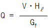
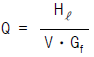
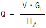
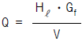
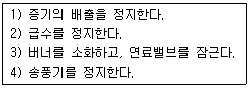

에너지관리기능사 (2004-10-10 기출문제)
1과목: 임의 구분
1. 액체 및 고체인 물체의 비중은 어떤 물질을 기준으로 하는가?
- 수은
- 톨루엔
- 알콜
- 물
(정답률: 95%)

2. 보일러의 드럼을 원통형으로 제작하는 가장 큰 이유는?
- 열효율을 높이기 위해서
- 제작을 간단히 하기 위해서
- 강도상 유리하게 하기 위해서
- 청소, 점검을 간단하게 하기 위해서
(정답률: 48%)
3. 전열방식에 따른 보일러 과열기의 종류가 아닌 것은?
- 복사형
- 대류형
- 복사대류형
- 혼류형
(정답률: 76%)
4. 증기 축열기(steam accumulator)를 옳게 설명한 것은?
- 증기를 응축시키는 장치이다.
- 폭발방지 안전장치이다.
- 보일러 부하 증가시에 대비하기 위한 장치이다.
- 증기를 한번 더 가열시키는 장치이다.
(정답률: 48%)
5. 슈트 불로워의 설명으로 잘못된 것은?
- 전열면 외측의 그을음이나 재를 제거하는 장치이다.
- 댐퍼를 완전히 열고 작동시킨다.
- 압축공기를 사용해서는 안 된다.
- 응결수를 제거한 건조증기를 사용하기도 한다.
(정답률: 44%)
6. 보일러 유리수면계의 유리관의 최하부는 어느 위치에 맞추는가?
- 안전 저수면의 위치
- 상용 수면의 위치
- 급수내관의 상부 위치
- 급수 밸브의 위치
(정답률: 76%)
7. 전열면적이 25 m2인 연관보일러를 5시간 연소시킨 결과 6,000 kg 의 증기가 발생했다면, 이 보일러의 증발율은?
- 40 kg/m2·h
- 48 kg/m2·h
- 65 kg/m2·h
- 240 kg/m2·h
(정답률: 63%)
8. 급수 온도 26 ℃ 의 물을 공급받아 엔탈피 665 kcal/kg인 증기를 6,000 kg/h 발생시키는 보일러의 상당증발량은?
- 7,113 kg/h
- 6,169 kg/h
- 7,325 kg/h
- 6,920 kg/h
(정답률: 57%)
9. 유압식 버너에서 유량과 유압의 관계는?
- 유량은 유압의 2승에 비례한다.
- 유량은 유압에 정비례한다.
- 유량은 유압의 평방근에 비례한다.
- 유량은 유압의 4승에 비례한다.
(정답률: 25%)
10. 중유 연소장치에서 사용되는 버너의 종류에 해당되지 않는 것은?
- 유압 분무식
- 증기 분무식
- 살포식
- 회전 분무식
(정답률: 75%)
11. 보일러 액체 연료가 갖추어야 할 성질이 아닌 것은?
- 발열량이 클 것
- 점도가 낮고, 유동성이 클 것
- 적당한 유황분을 포함할 것
- 저장이 간편하고, 연소 시 매연이 적을 것
(정답률: 75%)
12. 강제통풍 방식에서 통풍력이 약화되는 경우가 아닌 것은?
- 연도가 너무 짧은 경우
- 연도의 단면적이 작은 경우
- 연도의 굴곡이 많은 경우
- 연도 통로에 배플, 수관, 연관이 있는 경우
(정답률: 50%)
13. 고위발열량 9,800 kcal/kg 인 연료 3 kg 을 연소시킬 때 발생되는 총 저위발열량은 약 몇 kcal 인가? (단, 연료 1 kg 당 수소(H)분은 15 %, 수분은 1 % 의 비율로 들어있다.)
- 8,984 kcal
- 44,920 kcal
- 26,952 kcal
- 25,117 kcal
(정답률: 56%)
14. 자동제어에서 목표치와 결과치의 차이값을 처음으로 되돌려 계속적으로 수정하는 형태의 제어는?
- 순차 제어
- 인터록 제어
- 가스케이드 제어
- 피드백 제어
(정답률: 79%)
15. 액체 연료 연소장치인 회전식 버너, 기류식 버너 등에서 1차 공기란?
- 미연가스를 연소시키기 위한 공기
- 자연 통풍으로 흡입되는 공기
- 연료의 무화에 필요한 공기
- 무화된 연료의 연소에 필요한 공기
(정답률: 54%)
16. 보일러 자동점화와 가장 관계가 먼 장치는?
- 착화트랜스
- 점화플러그
- 유량검출기
- 점화버너
(정답률: 73%)
17. 보일러 부속장치 중 연소가스의 열을 회수하는 장치가 아닌 것은?
- 급탄기
- 절탄기
- 공기예열기
- 과열기
(정답률: 54%)
18. 보일러 연소에서 공기비가 적정 공기비보다 적을 때 나타나는 현상은?
- 연소실 내 연소온도 상승
- 보일러 열효율 증대
- 불완전연소에 의한 매연 발생량 증가
- 배기가스 중 O2 및 NO2량 증대
(정답률: 69%)
19. 보일러 부속장치인 증기 과열기를 설치 위치에 따라 분류할 때 해당되지 않는 것은?
- 대류식(접촉식)
- 복사식
- 전도식
- 복사대류식(복사접촉식)
(정답률: 54%)
20. 100 kg 의 물을 온도 20 ℃ 에서 90 ℃ 로 가열하는데 필요한 열량은?
- 7,000 kcal
- 9,000 kcal
- 18,000 kcal
- 72,000 kcal
(정답률: 65%)
2과목: 임의 구분
21. 오일 예열기의 역할과 특징 설명으로 잘못된 것은?
- 기름을 과열하여 연소 효율을 높인다.
- 기름의 점도를 낮추어 준다.
- 전기나 증기 등의 매체를 이용한다.
- 전기식은 증기식에 비하여 온도제어가 용이하다.
(정답률: 36%)
22. 물질의 상(相)의 변화에만 관계하고 온도에는 변화를 주지 않는 경우의 열은?
- 천이열
- 현열
- 전열
- 잠열
(정답률: 66%)
23. 수관식 보일러 중에서 곡관식 보일러는?
- 다쿠마 보일러
- 야로우 보일러
- 스터링 보일러
- 가르베 보일러
(정답률: 35%)
24. 노통 연관식 보일러의 특징을 잘못 설명한 것은?
- 내분식이므로 연소실의 크기에 제한을 받는다.
- 보유수량이 적어 파열시 피해가 작다.
- 구조상 고압 대용량에 부적당하다.
- 내부 구조가 복잡하여 보수 점검이 곤란하다.
(정답률: 55%)
25. 보일러 연소실의 열부하를 Q(kcal/m³·h)로 할 때 옳게 나타낸 식은?(단, V : 연소실 체적(m³), Gf : 연료의 연소량(kg/h), Hℓ : 연료의 저위발열량(kcal/kg))




(정답률: 42%)
26. 일반적으로 보일러의 열손실 중 가장 큰 것은?
- 미연소 손실
- 배기가스에 의한 손실
- 불완전연소 손실
- 방열 손실
(정답률: 79%)
27. 증기의 건조도가 0 이면 어떤 증기인가?
- 습증기
- 포화수
- 과열증기
- 건포화증기
(정답률: 26%)
28. 강철제 증기보일러의 설치검사 기준상 안전밸브 작동시험을 하는 경우 안전밸브가 1개만 부착되어 있다면 그 분출 압력은?
- 최고사용압력의 1.03배
- 최고사용압력 이하
- 최고사용압력의 1.2배
- 최고사용압력의 1.25배
(정답률: 44%)
29. 어떤 강철제 증기보일러의 최고사용압력이 1.2 MPa(12 kgf/cm2) 이다. 이 보일러의 수압시험 압력은?
- 1.6 MPa(16 kgf/cm2)
- 1.86 MPa(18.6 kgf/cm2)
- 2.4 MPa(24 kgf/cm2)
- 2.86 MPa(28.6 kgf/cm2)
(정답률: 43%)
30. 보일러 내부 점검사항이 아닌 것은?
- 전열면의 스케일 부착 상태
- 급수내관 등 각종 부품의 정확한 부착 상태
- 배기가스의 온도 상태
- 본체의 부식이나 손상 상태
(정답률: 64%)
31. 강철제 증기보일러의 분출밸브 크기는 호칭 25 이상이어야 하지만 전열면적이 몇 m2 이하이면 지름 20 mm 이상으로 할 수 있는가?
- 8 m2
- 10 m2
- 15 m2
- 20 m2
(정답률: 54%)
32. 보일러수의 분출에 대한 설명으로 옳은 것은?
- 수저분출은 연속적으로 분출하는 형태이다.
- 수면분출은 포밍 현상을 방지할 수 있다.
- 분출 콕은 반개(半開)하여서 분출하여야 한다.
- 분출은 증기압이 높고 부하가 클 때 행한다.
(정답률: 48%)
33. 보일러에 충분히 열이 전달되지 않는 원인과 관계가 없는 것은?
- 통풍 불량
- 연료공급 부족
- 스케일 부착
- 증기부하의 과중
(정답률: 62%)
34. 총경도 6 ppm 의 급수를 시간당 23 ton 씩 공급받는 보일러가 있다. 1일 동안 보일러에 공급되는 총경도 성분은?
- 23 kg
- 138 g
- 3,312 g
- 3,450 g
(정답률: 37%)
35. 보일러 수위가 규정 이하일 때 일어나는 현상은?
- 습증기가 발생하기 쉽다.
- 증기가 누설되기 쉽다.
- 수면계에 물때가 부착하기 쉽다.
- 보일러가 과열 또는 파열하기 쉽다.
(정답률: 73%)
36. 보일러 기수공발(carry over)의 원인이 아닌 것은?
- 증발 수면적이 너무 넓다.
- 주증기 밸브를 급개하였다.
- 부유 고형물이나 용해 고형물이 많이 존재하였다.
- 압력의 급강하로 격렬한 자기 증발을 일으켰다.
(정답률: 65%)
37. 유류용 온수보일러의 고장 또는 사고 발생 원인이 아닌 것은?
- 시공 후에 급수밸브를 잠근 채 운전하였다.
- 사용 중 배관에 누수가 생겨 빈 보일러로 가동하였다
- 팽창관에 체크밸브를 설치하지 않고 운전하였다.
- 화염검출기를 오랜 기간 청소하지 않고 운전하였다.
(정답률: 68%)
38. 보일러 연소실 내벽에 카본이 쌓이는 원인과 가장 무관한 것은?
- 연료유의 점도가 과대하다.
- 연소용 공기가 부족하다.
- 연료유압이 과대하다.
- 노내 온도가 높다.
(정답률: 48%)
39. 수관보일러의 수관 내부를 청소하는 도구로 가장 적합한 것은?
- 와이어 브러쉬
- 스크레이퍼
- 튜브 크리너
- 슈트 블로워
(정답률: 39%)
40. 증기보일러 취급 방법으로 틀린 것은?
- 역화의 위험을 막기 위해 댐퍼는 닫아 놓아야 한다.
- 점화 후 화력의 급상승은 금지해야 한다.
- 압력계, 수위계 등 부속장치의 점검을 게을리 하지 않는다.
- 송기시 주증기 밸브는 급개하지 않는다.
(정답률: 83%)
3과목: 임의 구분
41. 보일러 이음부 부근에서 발생하는 도랑 형태의 부식은?
- 점식(pitting)
- 전면식
- 반식
- 구식(grooving)
(정답률: 54%)
42. 고압보일러가 압력용기로 취급되는데 압력 발생의 주원인은?
- 수두가 높기 때문이다.
- 액체가 기체로 변하기 때문이다.
- 많은 연료를 사용하기 때문이다.
- 열에 의한 화학변화가 격렬하게 일어나기 때문이다.
(정답률: 50%)
43. 보일러 점화 직전에 연소실 및 연도의 환기를 충분히 하는 이유는?
- 미연가스 폭발방지
- 신속한 착화도모
- 연도의 부식방지
- 통풍력의 조절
(정답률: 83%)
44. 강관을 일정 형상으로 구부려 만든 것으로 응력이 작용될수 있으나 고장이 적고, 고압에도 잘 견디는 신축이음 종류는?
- 벨로즈형
- 루프형
- 슬리브형
- 볼형
(정답률: 68%)
45. 화염검출기에서 검출되어 프로텍터 릴레이로 전달된 신호는 버너 및 어느 장치로 다시 전달되는가?
- 압력제한 스위치
- 저수위 경보장치
- 연료차단 밸브
- 안전밸브
(정답률: 62%)
46. 보일러 사고 원인 중 취급 부주의가 아닌 것은?
- 과열
- 부식
- 압력초과
- 재료불량
(정답률: 84%)
47. 보일러 급수 중의 용존 고형물의 제거방법이 아닌 것은?
- 이온교환법
- 증류법
- 침강법
- 약품 처리법
(정답률: 30%)
48. 증기난방 방식에서 응축수 환수방법의 종류에 해당되지 않는 것은?
- 중력 환수식
- 습식 환수식
- 기계 환수식
- 진공 환수식
(정답률: 71%)
49. 보일러를 옥내에 설치하는 경우 급기구 및 환기구와 조명 시설에 대한 설명으로 틀린 것은?
- 연소 및 환경을 유지하기에 충분한 급기구 및 환기구가 설치되어야 한다.
- 도시가스를 사용하는 경우 환기구는 가능한 한 낮게 설치되어야 한다.
- 급기구는 보일러 배기가스 닥트(duct)의 유효단면적 이상이어야 한다.
- 보일러에 설치된 계기들을 육안으로 관찰하는데 지장이 없도록 충분한 조명시설이 되어야 한다.
(정답률: 71%)
50. 증기 난방시공에서 진공환수식으로 하는 경우 리프트 피팅(lift fitting)을 설치하는 데, 1단의 흡상 높이는 몇 m 이내로 하는가?
- 1 m
- 1.2 m
- 1.5 m
- 2 m
(정답률: 71%)
51. 증기보일러에서 송기를 개시할 때 증기 밸브를 급히 열면 발생할 수 있는 현상은?
- 캐비테이션 현상
- 수격 작용
- 역화
- 수면계의 파손
(정답률: 64%)
52. 보일러 가동을 중지한 후 연소실 내에 잔류한 누설가스나 미연소가스를 배출시키는 작업은?
- 페일 세이프(fail safe)
- 풀 프루프(fool proof)
- 포스트퍼지(post-purge)
- 프리퍼지(pre-purge)
(정답률: 47%)
53. 운전 중인 보일러에서 수관 파열이 발생하여 긴급 정지하고자 한다. 다음의 작업들을 순서대로 옳게 나열한 것은?

- 2) → 3) → 1) → 4)
- 1) → 3) → 4) → 2)
- 3) → 1) → 2) → 4)
- 3) → 4) → 1) → 2)
(정답률: 32%)
54. 가스용 보일러의 연료 배관은 노출 시공하여야 하나 매몰 시공할 수 있는 재료로 짝지어진 것은?
- 강관, 주철관
- 동관, 주철관
- 강관, 동관
- 동관, 스테인레스강관
(정답률: 44%)
55. 에너지이용합리화법의 목적이 아닌 것은?
- 에너지의 합리적이고 효율적인 이용
- 에너지 소비로 인한 환경피해를 줄임
- 에너지의 개발 및 보급
- 에너지의 수급 안정
(정답률: 69%)
56. 검사대상기기 조종자의 선임 의무는 누구에게 있는가?
- 시·도지사
- 에너지관리공단이사장
- 검사대상기기 판매자
- 검사대상기기 설치자
(정답률: 35%)
57. 검사대상기기의 계속사용검사 신청서는 유효기간 만료 며칠전까지 제출하여야 하는가?
- 7일
- 10일
- 15일
- 30일
(정답률: 43%)
58. 에너지절약 전문기업의 등록은 누구에게 하도록 위탁되어 있는가?
- 산업자원부장관
- 에너지관리공단 이사장
- 시공업자단체의 장
- 시.도지사
(정답률: 59%)
59. 특정열사용기자재에 해당되지 않는 것은?
- 강철제 보일러
- 주철제 보일러
- 구멍탄용 온수보일러
- 보온·보냉재
(정답률: 57%)
60. 검사대상기기의 검사에 불합격한 기기를 사용한 자에 대한 벌칙은?
- 1년 이하의 징역 또는 1천만원 이하의 벌금
- 2년 이하의 징역 또는 2천만원 이하의 벌금
- 300만원 이하의 벌금
- 500만원 이하의 벌금
(정답률: 79%)